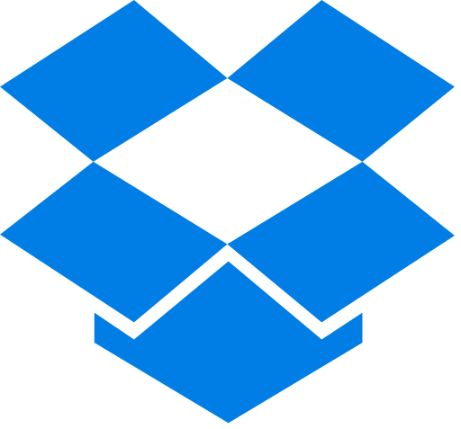
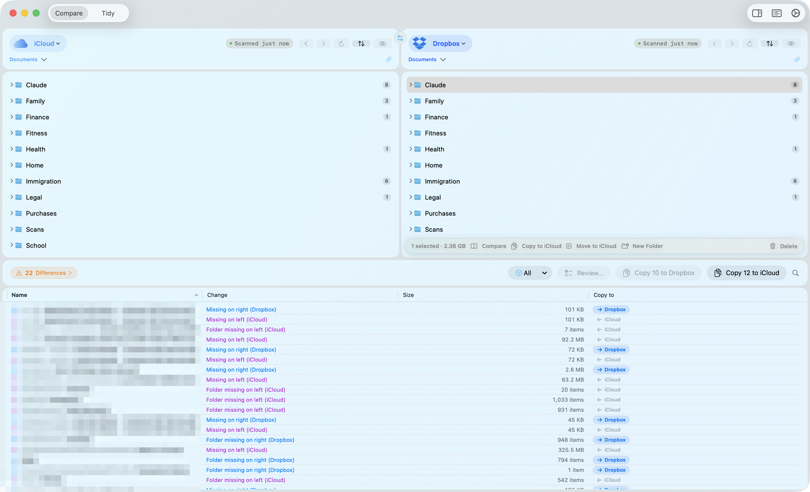
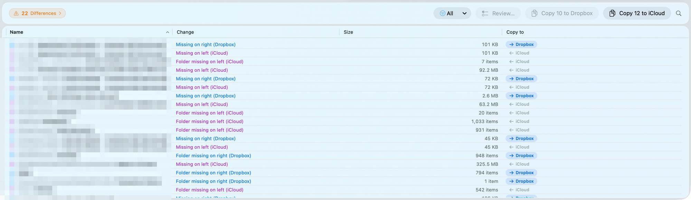
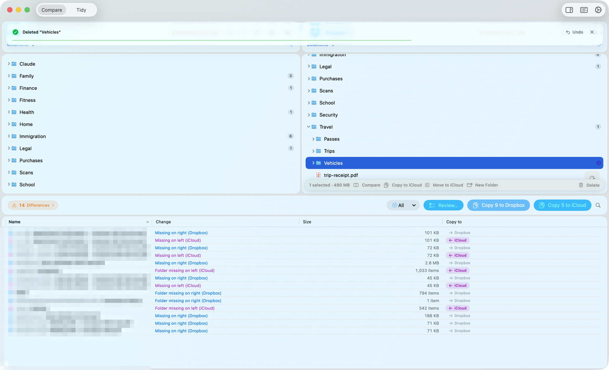
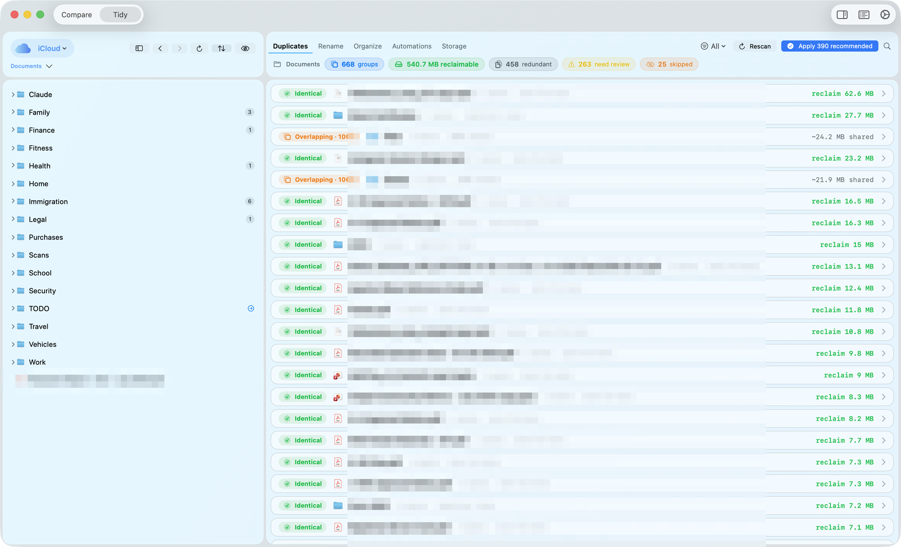
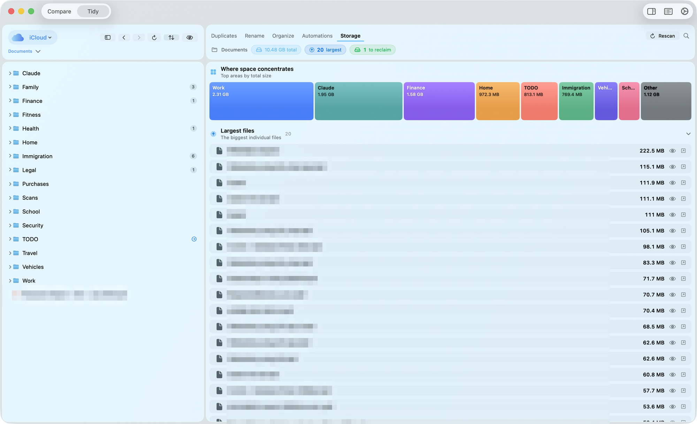
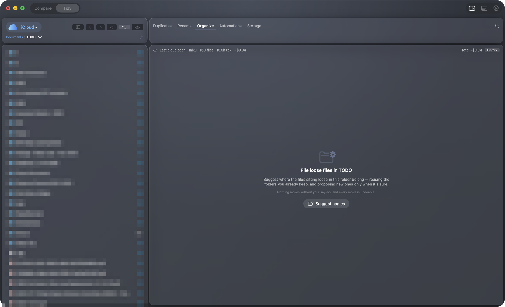
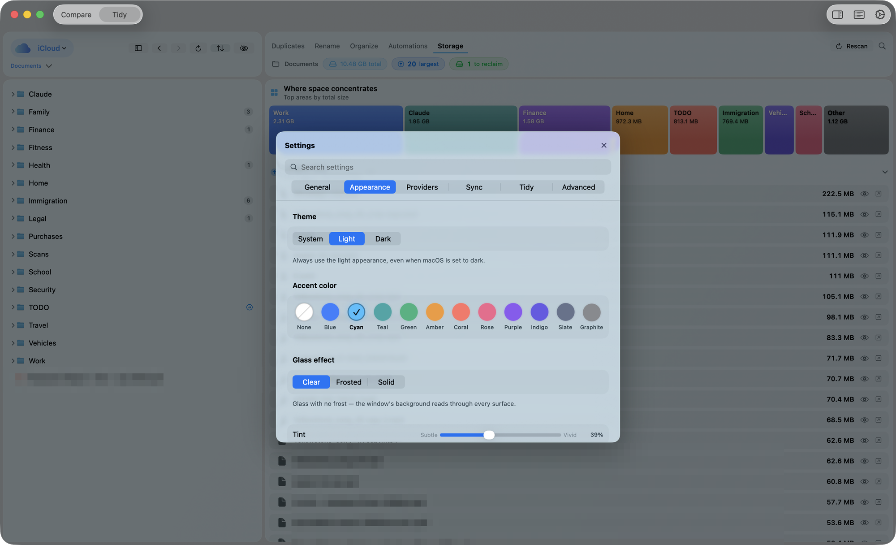

SyncCloud compares two folders side by side and shows exactly what differs — then helps you organize a single one: find duplicates, fix broken filenames, see where space goes, and auto-file loose documents. Everything is undoable.



Point each pane at a provider (or any folder) and scan. SyncCloud finds what's missing on either side, what's newer, and what only looks the same.
Every row is shape- and colour-coded, so status reads at a glance — and still reads without colour. A date tolerance absorbs the timestamp rounding cloud providers do, so you're not staring at hundreds of false differences.
kind:pdf, >10mb, only:left, with live counts.
Copy or move in bulk, or step through changes one at a time in Guided Review. When two files are the same size but different dates, content verification checksums both sides and tells you whether they truly differ — then offers to reconcile the identical ones in one click.
⌘→ copy, add ⇧ to move.
A whole workspace is just your files, and it is the one SyncCloud opens on: Browse gives one provider the full window — no lens, no suggestions, the plain file browser. A folder sidebar runs down the left of all four workspaces, holding the folders you keep and the ones you were last in. And wherever a pane appears, it renders as columns, the way Finder does — so you can see the path you took, not just where you landed. Drill into a folder and the linked pane follows.
Down the left of every workspace, in three sections: Favorites, the folders and places you keep; Locations, every account you have signed into plus your disks; and Recents, the folders you were last in. Favorites and Recents span every source, and you choose what sits in them.
The default view. Each level stays on screen, so the route in is always visible — and a drill on one side mirrors onto the other.
Select a file and it previews in place, pinned beside the stack rather than squeezed inside it. Available in the Browse and Organize file browser and in both comparison panes.
Send a file somewhere without the system panel — the app's own picker, floated over the window, built on the same surfaces as Settings.
The bar above each pane is a canvas. Drag the controls you use into it, drop the ones you don't, and it stays that way.
Switch a provider into the Organize workspace and reach for whichever lens the mess calls for.
Scans loose files and suggests which existing folder each one belongs in, filing it there safely. Starts fully offline; Apple Intelligence or Claude can sharpen the picks.
Finds identical copies, overlapping folders, drifted versions, name-only clashes, and PDFs whose text matches when their bytes don't. Picks a smart keeper, previews each copy, and reclaims space — always to the Trash, never the last copy.
Filenames that break on a provider — OneDrive's forbidden characters and reserved device names, Dropbox's trailing spaces and periods — plus zero-width characters and non-standard spaces, which are flagged on every provider because no cloud stores them predictably. Then files that break their folder's NN. Mon YYYY date convention where the folder already keeps one, and files whose ordinals have to shift or gain a leading zero to keep that folder in order. Each row names the problem in words and shows the name it would become.
Reports where the tree disagrees with its own habits — one recurring series whose folders have ended up in two or more different internal schemes. Report-only for now: it names the disagreement rather than moving anything.
Deterministic, on-device rules — "when a file matches …, file it into Taxes/{year}." Dry-run preview before anything moves, and SyncCloud can learn a rule after you file by hand.
Every clean-up action across all five lenses is one grouped, reversible step. Trash-backed, atomic, and gone with a single ⌘Z.

SyncCloud content-hashes size-colliding files (SHA-256), never trusts names alone, and refuses to trash the last copy of anything. The keeper it recommends is the one not buried in archive/, old/, or backup/ — and you can always pick a different one.
Report, Report (1), Report-final; keep the newest.A workspace of its own, and the report is strictly read-only — the treemap and its lists never move or delete anything, and nothing here evicts a file from your Mac.

Storage shows you a treemap of your biggest folders and three ranked lists: the largest files, the ones you haven't touched in over a year, and the big-and-idle reclaim candidates.
Point Organize at a folder full of downloads and screenshots. A fast, fully-offline engine reads your existing folder names, the filenames, and — on device — a little of each file's text, then proposes a home for each one with a confidence rating and a plain-English reason.
Want sharper picks? Layer AI on top. It's optional, gated, and metered — and it only ever leads when it's more confident than the offline engine.

SyncCloud treats your files as irreplaceable. Every mutation is designed to be reversible — and to refuse and report when something is ambiguous rather than guess.
Copy, move, delete, rename, new folder — each is a grouped ⌘Z step, including "Undo Last Run".
Deletes go to the macOS Trash. Permanent delete only exists as a clearly-warned, Trash-less-volume fallback.
Overwrites stage to a temp file and swap in — the original is never momentarily missing, and a backup is kept.
From/To confirmations, collision strategies, an invalid-name guard, and a path boundary that won't cross provider roots.
git-style CLIScan and sync from the terminal or a script — no window required.
# discover the cloud providers on this Mac $ synccloud providers # compare two folders (a provider id/name or a path) $ synccloud scan -L iCloud/Documents -R OneDrive/Documents $ synccloud scan -L ~/A -R ~/B --verify # checksum same-size pairs $ synccloud scan -L ~/A -R ~/B --json # machine-readable # sync one direction, keeping both on collision (prompts unless --yes) $ synccloud sync -L ~/A -R ~/B --direction to-right --strategy keep-both --yes
A Liquid-Glass interface with System / Light / Dark themes, 12 accent hues, and per-provider brand colours.
